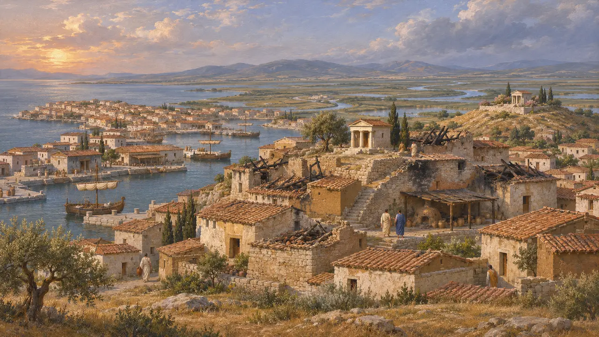
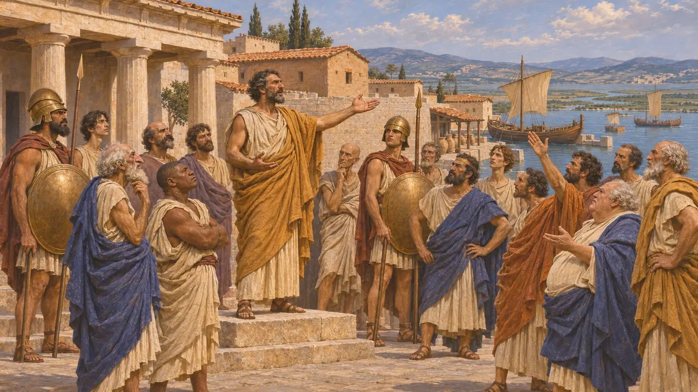
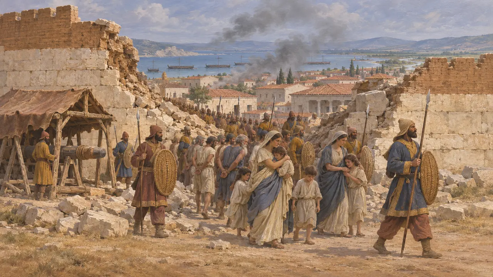
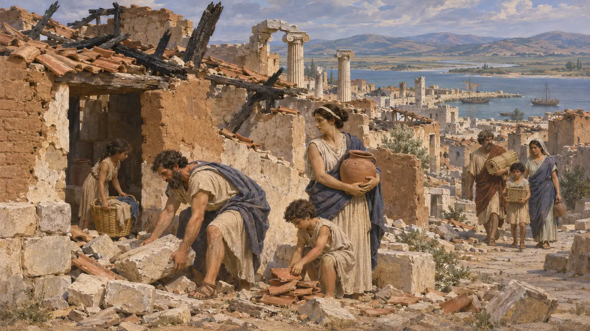
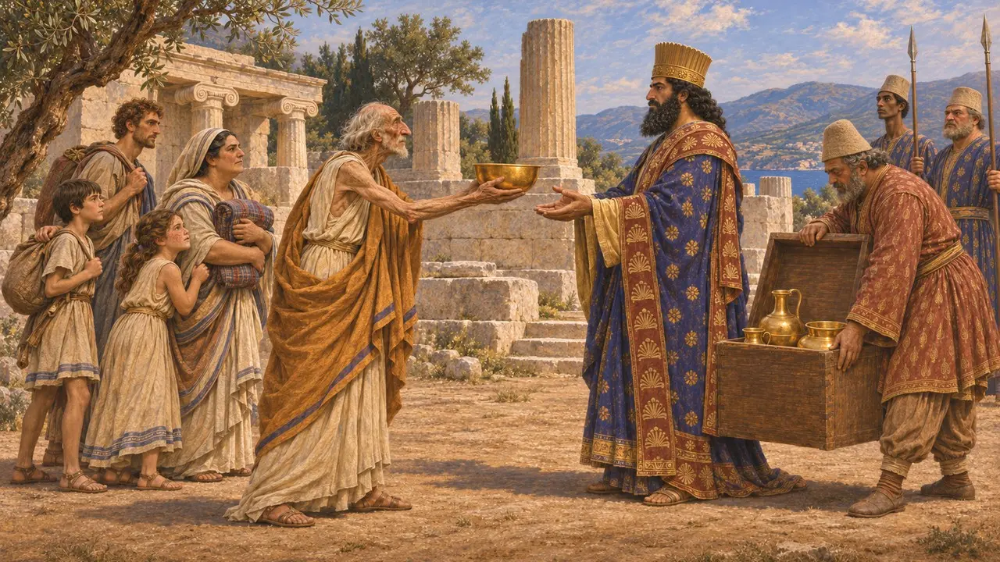

Milet
Cité grecque d'Ionie à l'embouchure du Méandre, prise par les Perses en 494 av. J.-C.
Dans le jeu : Niveau 6 : Le Pont de bateaux, Niveau 7 : Sardes brûle
Milet était une cité grecque de la côte de Carie, près de l'embouchure du Méandre, et Hérodote la qualifie de parure de l'Ionie à son apogée, vers 500. Sous la domination perse, ses tyrans Histiée et Aristagoras gagnèrent la confiance du Roi, jusqu'à ce qu'Aristagoras entraîne les Ioniens dans la révolte en 499. Les Perses prirent la cité en 494, et sa chute frappa de stupeur le monde grec.
Dans le jeu : Milet ne fait pas partie des niveaux du jeu. La chronique la qualifie de plus grande des cités ioniennes et date sa prise, par siège et par sape, de 494, comme le fait Hérodote.

Une cité portuaire sur le Méandre
Dans les sourcesDes équipes allemandes fouillent Milet depuis 1899 ; elles ont mis au jour une cité bâtie sur une péninsule, dotée de plusieurs ports aujourd'hui ensablés et situés à l'intérieur des terres. Des maisons, des sanctuaires et des ateliers archaïques ont été découverts sur la colline de Kalabaktepe et dans le sanctuaire d'Aphrodite à Zeytintepe. Les deux secteurs portent des traces d'incendie et de destruction que les fouilleurs datent de 494 environ. L'oracle d'Apollon à Didymes, le grand sanctuaire de la cité, se trouvait à environ 16 kilomètres au sud.
A. Greaves, Miletos: A History, 2002

De client de la Perse à la révolte
Récit antiqueHérodote rapporte que, lorsque Cyrus prit la Lydie, Milet conserva les conditions dont elle jouissait sous Crésus. Son tyran Histiée aida à garder le pont de Darius sur l'Istros et fut récompensé par des terres en Thrace, mais il fut ensuite retenu auprès du Roi à Suse. Son lieutenant Aristagoras échoua à prendre Naxos avec l'aide des Perses vers 500. Pour sauver sa tête, Aristagoras renonça à la tyrannie et souleva l'Ionie contre le Roi.
Herodotus 1.141; 4.137; 5.11; 5.23-25; 5.30-38

Le siège et la chute de 494
Récit antiqueHérodote rapporte qu'après la déroute de la flotte ionienne à Ladé, les Perses assiégèrent Milet par terre et par mer, sapèrent les murailles, firent avancer des machines de toutes sortes et prirent la ville la sixième année de la révolte. La plupart des hommes furent tués, les femmes et les enfants réduits en esclavage. Les captifs furent conduits à Suse, et Darius les établit à Ampé, près de l'embouchure du Tigre. Le sanctuaire de Didymes fut pillé et incendié.
Herodotus 6.7-17 (Lade); 6.18-20

Milet était-elle vraiment vide ?
ContestéHérodote rapporte que Milet fut vidée de ses Milésiens, et ajoute qu'Athènes infligea une amende au poète Phrynichos pour avoir fait jouer une pièce intitulée La Prise de Milet. Pourtant, des Milésiens servaient dans l'armée perse à Mycale en 479 : ils l'égarèrent, puis l'attaquèrent. La cité fut reconstruite selon un plan régulier après 479. Bien des historiens estiment qu'Hérodote a exagéré les pertes humaines, même si les destructions mises au jour par les fouilles attestent un coup très dur.
Herodotus 6.21-22; 9.104; V. B. Gorman, Miletos, the Ornament of Ionia, 2001

Les Branchides et leur sort
Légende tardiveDes auteurs plus tardifs racontaient une autre histoire au sujet de Didymes. Dans leur version, la famille sacerdotale du lieu, les Branchides, livra le trésor du temple à Xerxès et partit vers l'est avec lui par crainte du châtiment. Strabon et Quinte-Curce rapportent qu'Alexandre retrouva leurs descendants au-delà de l'Oxus et les extermina comme héritiers de traîtres. Ce récit contredit Hérodote, qui situe l'incendie de Didymes en 494, et se lit comme une fable morale de la trahison punie.
Strabo 14.1.5; 11.11.4; Curtius Rufus, Histories of Alexander 7.5
Sources
- Herodotus, Histories 1.141, 4.137, 5.11, 5.23-38, 6.7-22, 9.104
- A. Greaves, Miletos: A History, 2002
- V. B. Gorman, Miletos, the Ornament of Ionia, 2001
- P. Briant, From Cyrus to Alexander, 2002
- Strabo, Geography 11.11.4, 14.1.5
- Curtius Rufus, Histories of Alexander 7.5